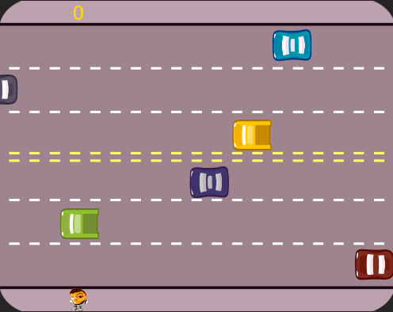

Aportuguesado
O "Aportuguesado" é uma plataforma fictícia online destinada ao estudo da língua portuguesa. Neste projeto, desenvolvi uma landing page simples, inspirada nas práticas e metodologias de ensino oferecidas pela Alura. Em colaboração com a Vitória Lopes.
Técnologias utilizadas:
Ping Pong
O 'Ping Pong' representa um jogo web front-end cujo desenvolvimento foi inspirado e fundamentado nos ensinamentos dos cursos oferecidos pela plataforma Alura. O objetivo do jogo é simples: marcar mais pontos do que o seu oponente ao acertar a bola na área de jogo do seu adversário.
Técnologias utilizadas:



 Ver Projeto
Ver Repositório
Ver Projeto
Ver Repositório
Atravessando
O 'Atravessando a Rua' representa um jogo web front-end cujo desenvolvimento foi inspirado e fundamentado nos ensinamentos dos cursos oferecidos pela plataforma Alura. O objetivo do jogo é atravessar a rua com sucesso, evitando ser atingido por carros, à medida que você acumula pontos.
Técnologias utilizadas: